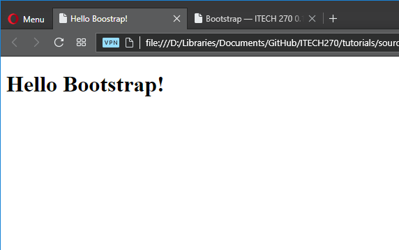
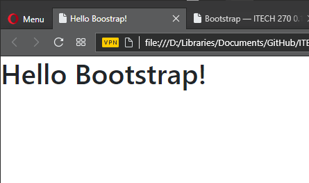

Bootstrap¶
Bootstrap is a free, responsive, open-source, front-end framework for web-development that is designed from a mobile-first design philosophy. This means that a properly designed Website that uses Bootstrap will look good on mobile browsers as well as it does on larger screens.
- responsive
- Responsive web design is less of a set of hard rules and more an approach and strategy to web design to ensure that a web page will render well on many different sizes of screens. That is should look good across a variety of devices and screen sizes.
- open-source
- A philosophy and practice centered around keeping the source-code for a piece of software open and freely available to whomever decides to look at it and figure out how it works, alter it to suit their own needs, or even contribute to the main code base.
- front-end
- Front-end web development is exclusively concerned with developing the part of the Web site that the user can see and interact with directly. This is to differentiate it between back-end development which is concerned with “under-the-hood” functionality such as databases, form validation, and user-transparent processes. Front-end development typically involves using HTML, CSS, and JavaScript for the Web application. Front-end and back-end development are sometimes performed by the same group of people or divided between two or more teams whose sole purpose is one or the other.
- CDN
- A content delivery network is a way of using common software libraries in web-development without having to download and install them yourself. Typically, all you have to do is include a URL to the CDN code in a script or link tag in your file, which will give you complete access to all of the functionality of the library without having to download it yourself.
Getting Started¶
There is plenty of great documentation available on the Bootstrap website, and while you are working through this tutorial, you should also have the main documentation open in another tab so that you can cross-reference anything that you see in these tutorials to see how it fits in the larger picture. In these tutorials, we will only look at a subset of all of the things that are possible. Once you get a “feel” for Bootstrap, it will kind of click and you will see how the use of Bootstrap’s classes can streamline the process of front-end development.
So how do you “use” Bootstrap? For the purposes of this tutorial, we will use a content delivery network, or CDN, to include the Bootstrap source code in our HTML file. It’s the easiest and fastest way to get up and running with Bootstrap and it’s awfully convenient.
Create a blank HTML file and name it bs_test.html. Add in all of the typical meta tags, doctype declarations that you normally would. Here is a template you may use:
<!DOCTYPE html> <html lang="en"> <head> <meta charset="UTF-8"> <title>Hello Boostrap!</title> </head> <body> <h1>Hello Bootstrap!</h1> </body> </html>Go ahead and open the web page in a browser and observe the page. It should look about how you’d expect.
Next, we’ll add the Bootstrap CDN links and tags. In the head element, add the bootstrap CDN link:
<link rel="stylesheet" href="https://maxcdn.bootstrapcdn.com/bootstrap/4.0.0-beta.3/css/bootstrap.min.css" integrity="sha384-Zug+QiDoJOrZ5t4lssLdxGhVrurbmBWopoEl+M6BdEfwnCJZtKxi1KgxUyJq13dy" crossorigin="anonymous">
And then, at the bottom of the page, just before the closing body tag, add the JavaScript libraries for both Bootstrap and JQuery (more on JQuery in the next chapter; for n ow, just add it and trust):
<script src="https://code.jquery.com/jquery-3.2.1.slim.min.js" integrity="sha384-KJ3o2DKtIkvYIK3UENzmM7KCkRr/rE9/Qpg6aAZGJwFDMVNA/GpGFF93hXpG5KkN" crossorigin="anonymous"></script> <script src="https://cdnjs.cloudflare.com/ajax/libs/popper.js/1.12.9/umd/popper.min.js" integrity="sha384-ApNbgh9B+Y1QKtv3Rn7W3mgPxhU9K/ScQsAP7hUibX39j7fakFPskvXusvfa0b4Q" crossorigin="anonymous"></script> <script src="https://maxcdn.bootstrapcdn.com/bootstrap/4.0.0-beta.3/js/bootstrap.min.js" integrity="sha384-a5N7Y/aK3qNeh15eJKGWxsqtnX/wWdSZSKp+81YjTmS15nvnvxKHuzaWwXHDli+4" crossorigin="anonymous"></script>
Finally, we add one more meta tag to the head element of the page:
<meta name="viewport" content="width=device-width, initial-scale=1, shrink-to-fit=no">
This is a magic meta tag that tells web browsers that they should account for the width of the screen when rendering the page.
Altogether, our new template will look like this:
<!DOCTYPE html> <html lang="en"> <head> <meta charset="UTF-8"> <meta name="viewport" content="width=device-width, initial-scale=1, shrink-to-fit=no"> <!-- Bootstrap CSS --> <link rel="stylesheet" href="https://maxcdn.bootstrapcdn.com/bootstrap/4.0.0-beta.3/css/bootstrap.min.css" integrity="sha384-Zug+QiDoJOrZ5t4lssLdxGhVrurbmBWopoEl+M6BdEfwnCJZtKxi1KgxUyJq13dy" crossorigin="anonymous"> <title>Hello Boostrap!</title> </head> <body> <h1>Hello Bootstrap!</h1> <!-- Optional JavaScript --> <!-- jQuery first, then Popper.js, then Bootstrap JS --> <script src="https://code.jquery.com/jquery-3.2.1.slim.min.js" integrity="sha384-KJ3o2DKtIkvYIK3UENzmM7KCkRr/rE9/Qpg6aAZGJwFDMVNA/GpGFF93hXpG5KkN" crossorigin="anonymous"></script> <script src="https://cdnjs.cloudflare.com/ajax/libs/popper.js/1.12.9/umd/popper.min.js" integrity="sha384-ApNbgh9B+Y1QKtv3Rn7W3mgPxhU9K/ScQsAP7hUibX39j7fakFPskvXusvfa0b4Q" crossorigin="anonymous"></script> <script src="https://maxcdn.bootstrapcdn.com/bootstrap/4.0.0-beta.3/js/bootstrap.min.js" integrity="sha384-a5N7Y/aK3qNeh15eJKGWxsqtnX/wWdSZSKp+81YjTmS15nvnvxKHuzaWwXHDli+4" crossorigin="anonymous"></script> </body> </html>Refresh the browser and observe the subtle change. “What?” you say, “All it did was change the font!” Oh, it did much more than that, as we shall see.

{kind=link}